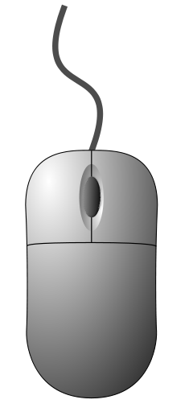

HELP/INSTRUCTIONS
Use your mouse to interact with the player.
 Press the space-bar to toggle Play and Pause.
Press the space-bar to toggle Play and Pause. Press the right arrow key to jump to next audio.
Press the right arrow key to jump to next audio. Press the left arrow key to jump to previous audio.
Press the left arrow key to jump to previous audio. Press the M key to toggle mute and unmute.
Press the M key to toggle mute and unmute. + Use Shift + Right arrow key to seek forward.
Use Shift + Right arrow key to seek forward. + Use Shift + Left arrow key to seek backward.
Use Shift + Left arrow key to seek backward.
Do not show at start up!